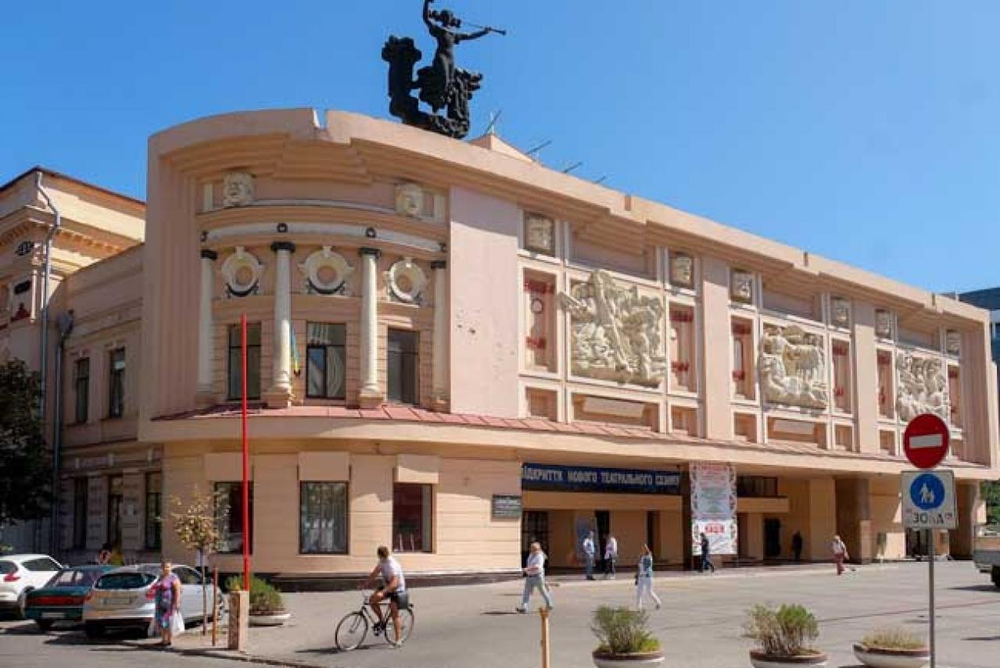

Основна інформація
Дніпро — місто в Україні на обох берегах річки Дніпро, адміністративний центр Дніпропетровської області, Дніпровського району та Дніпровської міської громади. Місто є четвертим за чисельністю населення в Україні після Києва, Харкова та Одеси. Дніпро вважається «космічною столицею» України.
Музика, театр кіно
Тут проводились фестивалі джазової музики «Джаз на Дніпрі» (у 1987—1990 та 1999—2006 роках), проводяться юнацький фестиваль «Дніпровські зорі», фестиваль музичного мистецтва «Музика без меж».
Діють два драматичні театри — Дніпровський академічний український музично-драматичний театр імені Тараса Шевченка (з 1918 року) та Дніпровський академічний театр драми і комедії (з 1927 року). Також працює 5 палаців культури. У будинку органної і камерної музики проводяться міжнародні органні фестивалі, проводяться концерти органної і камерної музики, кількість відвідувачів сягає 30 тисяч слухачів у місяць. Це культурний осередок Дніпра.
Музеї
У місті розташована низка музеїв. Історичний оперує будинком свого найвідомішого науковця — Дмитра Яворницького. Унікальними експонатами є половецькі «баби», Керносівський ідол та колекція козацьких старожитностей. Іншими підрозділами є музей місцевого самоврядування та діорама «Битва за Дніпро», найбільша діорама в Україні, друга за площею в Європі. Наразі Діорама працює також як виставковий центр. На площі перед діорамою розміщена колекція радянської військової техніки 1940-х років та з 2016 року — Музей «Громадянський подвиг Дніпропетровщини в подіях АТО» (Музей АТО).